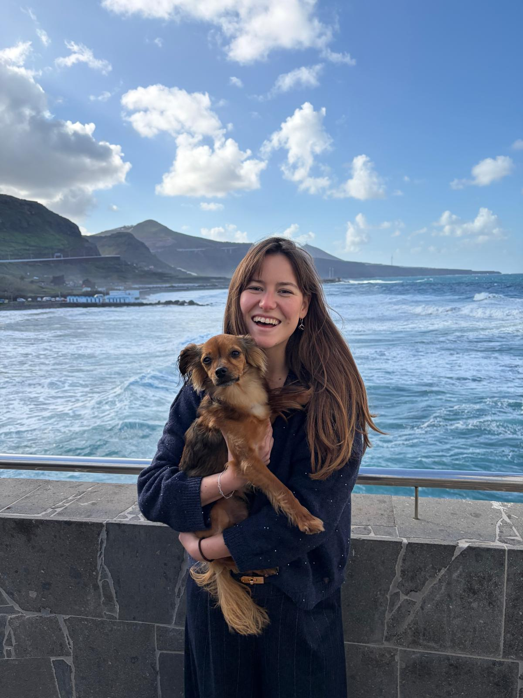

Alejandra Mones Colom · Early-Stage Impact Investing
A curated portfolio of early-stage investment theses focused on impact-driven companies, especially in health and climate. While these are my core sectors, I love discovering exceptional founders across any space solving problems that matter.
Philosophy
Backing founders who reimagine healthcare—from deep tech innovations treating neurological conditions to platforms making care more accessible. Health is wealth, and everyone deserves access to it.
Supporting companies tackling climate change head-on—from adaptation platforms to sustainable food systems and circular economy solutions. The planet can't wait, and neither should we.
Great founders solving meaningful problems can come from anywhere. While health and climate are my core focus, I'm always excited to discover exceptional companies across sectors—future of work, fintech, education, and more.
I use a structured framework combining industry-standard impact measurement (Five Dimensions of Impact, IRIS+, SDG alignment) with rigorous financial analysis. Every company I evaluate goes through the same systematic process.
Portfolio
What if we stopped shipping water around the world? Bar.on's molecular beer technology creates any beer style using tap water and flavor cartridges—potentially reducing beer's carbon footprint by 50-70%.
Growing protein like we brew beer. ENOUGH's mycoprotein uses 97% less water and feed than beef, backed by Cargill, supplying Unilever and M&S. This is what I look for at Seed stage.
What if treating brain disorders didn't require brain surgery? NeuroHarmonics uses focused ultrasound to stimulate deep brain regions with 1000x more precision than conventional methods—no incisions needed.
What if businesses could see climate disasters coming? SmartResilience gives FTSE 100 clients like Sainsbury's and Bupa the intelligence to prepare. Just raised £1.1M.
UK manufacturing dropped from 18% to 9% of GDP. Isembard is the operating system rebuilding it—MasonOS replaces paper systems and legacy ERP, cutting quote times from weeks to minutes.
Liquid biopsy is a game-changer for early cancer detection—but 80% of lung cancer patients never access it. Biomarx is building an automated platform designed for real NHS workflows, not just specialist research centres.
Over 5 million people in the UK are pushed into poverty by transport costs, locked out of jobs and education. RideTandem transforms existing taxi, minibus, and coach fleets into smart shared shuttles — enabling employers to connect workers to opportunities for close to the price of a bus.
Our most beloved crops — coffee, bananas, grapes — face existential threats from climate change and disease, but take 20+ years to improve through conventional breeding. Amatera's CellTera platform moves screening from the greenhouse to the cell, delivering crop improvements 10x cheaper and 2x faster.
1 in 6 couples struggle with infertility, and IVF fails more often than it succeeds. Ovo Labs is developing the first-ever therapeutic to address the root cause — egg quality decline — built on 20 years of foundational research from the Max Planck Institute.

I'm the COO of a climate tech startup, but my path here was anything but linear. I studied Medical Sciences and Engineering at UCL (yes, I couldn't choose), then did my MRes in Medical Device Design and Entrepreneurship at Imperial. There, I helped develop the business plan for a lateral flow test to detect recurrent ovarian cancer. Turns out, I really liked the "making science actually reach people" part.
That led me to tech transfer at UCL, where I helped engineering technologies find their way out of labs and into the real world. There I met the Economad, and was moved by their mission, so now here I am—obsessed with companies that have genuine social impact.
My investment banking days taught me one thing: I care way more about founders' stories than spreadsheets. I always loved reading about psychology, but I realized that what I actually love is understanding what and why people are trying to build, and figuring out the strategy to make it happen. In a world drowning in buzzwords, I hunt for founders who couldn't care less about trends and just want to solve real problems.
Things to know about me:
I like to challenge myself, so even though I'm afraid of heights, you'll probably find me climbing walls (literally). However, the most important thing to know about me is that I am obsessed with animals, so you will probably find me dog-sitting every pup in my neighbourhood.🐕💜
Get in Touch
Whether you're a founder building something meaningful, an investor who shares this thesis, or just someone who wants to chat about impact—I'd love to hear from you.